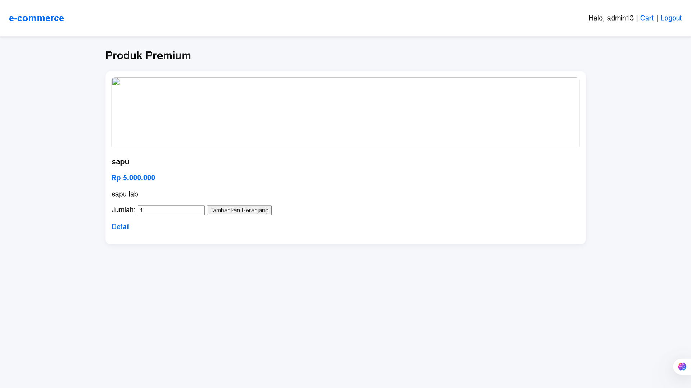
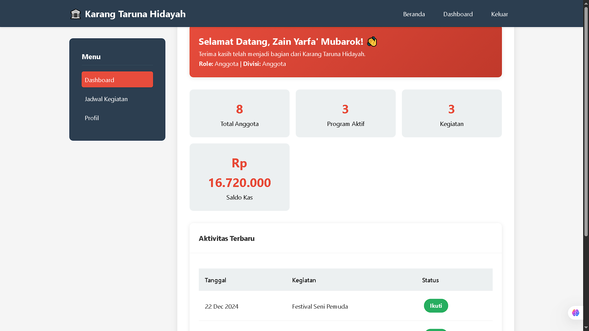
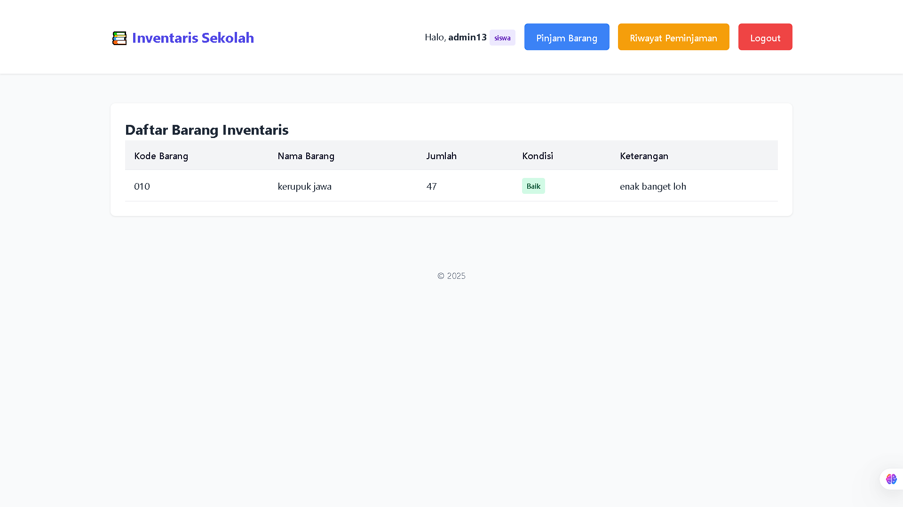
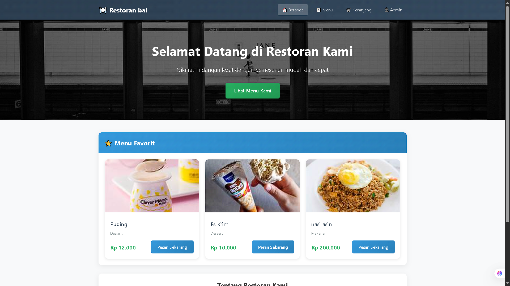

Saya adalah seorang pelajar SMK yang bersemangat di bidang pengembangan perangkat lunak.
Saat ini saya fokus mempelajari teknologi web development termasuk HTML, CSS, PHP, dan MySQL.
Saya memiliki minat besar dalam menciptakan solusi digital yang dapat membantu memecahkan
masalah sehari-hari.
Selain belajar di sekolah, saya aktif mengembangkan proyek-proyek pribadi untuk meningkatkan
keterampilan teknis saya. Saya percaya bahwa praktik langsung adalah cara terbaik untuk
belajar dan berkembang di dunia teknologi.
Pendidikan
SMK Hidayah
Portofolio

Mini E-Commerce
Platform jual beli sederhana dengan fitur keranjang belanja dan pembayaran
HTMLCSSPHPMySQL

Web Karang Taruna
Website profil organisasi pemuda dengan galeri kegiatan dan informasi
HTMLCSSPHP

Web Inventaris Sekolah
Sistem manajemen inventaris barang sekolah dengan laporan otomatis
HTMLCSSPHPMySQL

Menu Restaurant
Aplikasi digital menu restoran dengan kategori dan pencarian
HTMLCSSPHP
Keahlian
Mampu beradaptasi Di lingkungan Baru
Bisa bekerja Dalam tim Dengan Baik
Pengalaman Organisasi
Anggota Karang Taruna
2022 - Sekarang
Saya aktif mengikuti kegiatan sosial dan program pengembangan pemuda di lingkungan tempat tinggal. Melalui kegiatan tersebut, saya berkontribusi bagi masyarakat sekaligus mengembangkan kemampuan kerja sama, dan kepedulian sosial.